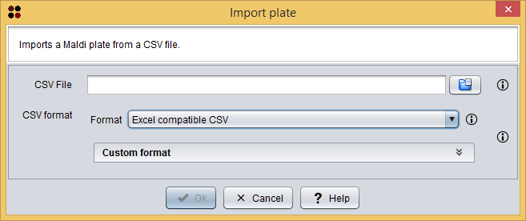

Custom CSV panel
This operation allows you to import a Maldi plate from a CSV file.
Usage
You can execute this operation by clicking the menu option Import/Import Maldi plate.
A dialog will appear allowing you to choose the CSV file containing the Maldi plate. As you can see in the following image, this dialog requires you to provide the following information:

Import Maldi plate dialog
As commented above, you can customize the CSV format by selecting the Custom format option. When you select this option, the following custom format panel will be shown in the dialog. The options included in this panel will allow you to customize the CSV format:
Custom CSV panel
After clicking the Ok button, the imported Maldi plate is added as a Maldi plate datatype to the clipboard and automatically opened in the Maldi plate editor.
CSV file content
In order to import a Maldi plate from a CSV file, this file must have the following contents:
The following content is an example of a valid Maldi plate CSV file:
,1,2 A,140,200 B,,45 C,50,